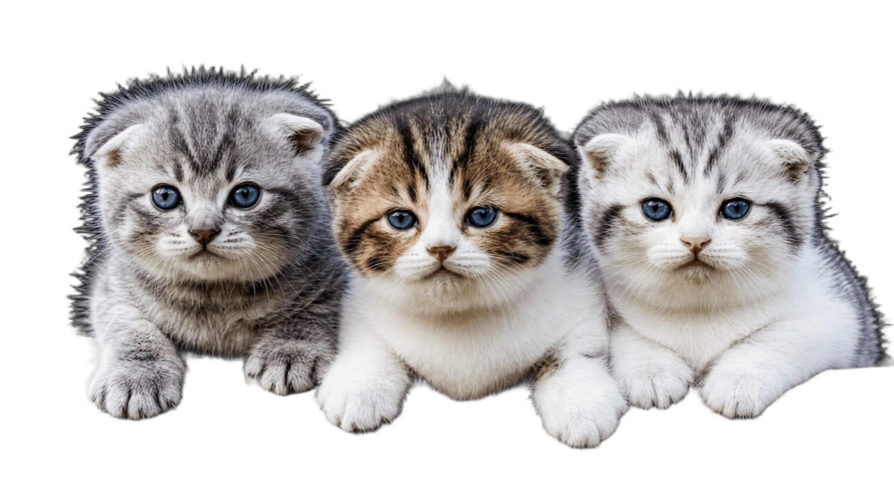

Living Things Komunitas - 2012
Cinta Tanpa Syarat, Sahabat Sepanjang Hayat

WesternHome mempertemukan kucing, anjing, kelinci, burung, dan hamster yang butuh keluarga dengan orang-orang yang siap merawat mereka seumur hidup.